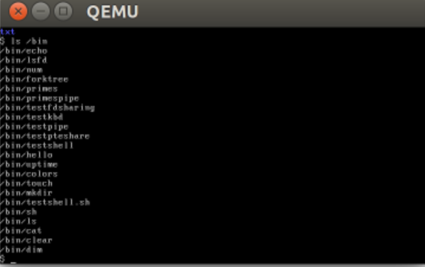
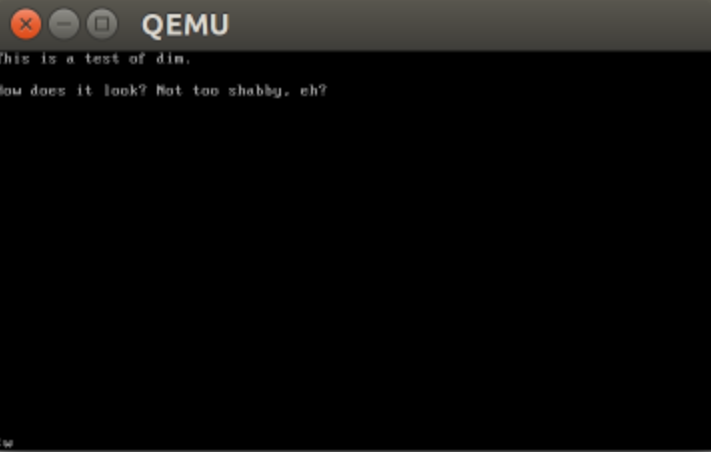

Part 2: Doing
By the time my junior year came around, I felt as though I had built a solid enough foundation in my thought, and I was ready to start applying what I learned to the act of creating and doing. I began working on theatre projects in earnest, creating software, and taking practical classes which trained me on how to do things, trying to keep in mind the whole time the connections and lessons I had previously learned.
Junior Year
ENGR 202: Engineering for Social Justice
This class literally fell apart. Everyone who took it ended up getting credit, since the facilitators mis-scheduled the assignments and we never got a real chance to do the final project. Despite that, the focus of this class was vitally important: engineering decisions have political effects, and sometimes, despite the common presumption that engineering is usually apolitical, political causes.
The final project in this class was to be a presentation about an engineering artifact and an exploration of its political nature. Because I'm a sucker for public transportation, I chose to explore the Seattle Link light rail expansion. Attached here is an early reading response I made to the class discussion board, which focuses mostly on the light rail.
{kind=link}
CSE 431: Algorithms
The problem P vs. NP is one of the great unsolved problems in computer science. It is somewhat difficult to explain very quickly, but essentially, the question is, Is every problem in which any potential solution can be quickly verified itself able to be quickly solved? It is a very abstract problem, using the theoretical construction of a Turing machine (which is mathematically just a little more powerful than a real computer,) but it has potentially very practical consequences: if P = NP, then certain common methods of cryptography could become nearly useless, which would be extremely disruptive to the entire Internet.
It's hard to find anything from this class which is meaningful to someone who hasn't already studied the material, but the attached is a homework from the middle of the quarter which, hopefully, isn't too full of abbreviations.
Cabaret
Cabaret was one of the worst times of my life so far.
It was a huge undertaking, I got pneumonia in the middle of the process from overwork, my grades took a huge dip (enough that the CSE advisors emailed me afterwards asking if I was okay), and there were enough interpersonal issues between members of the cast and crew that the painful work wasn't complemented by happy togetherness.
However, we made good work. And I learned, by experience, what my limit is, and that I shouldn't surpass it. I also learned that the major difference between making good work and making work that is good for you.
Senior Year
CSE 451: Operating Systems
In CSE 451, we dug to the grimy underside of software, where nobody but the most daring programmers dare to work. I loved it: it gave me a sense of agency with software, a feeling of “if I can make this work, I can make anything work!” It also opens up certain interesting points of view—this work has an extremely technical ethos, and is about four layers below most things users see, but certain design choices in this space have real, immediate consequences that many in the space easily forget.
These are a few screenshots from the final operating system I (and a partner) built. It doesn't seem anything special to an outside observer, but I'm proud of it.
 